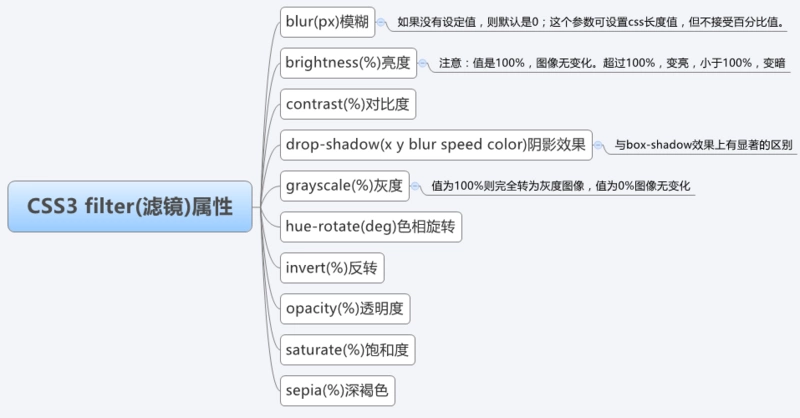

CSS3
Flex & Grid
Flex是Flexible Box的缩写，翻译成中文就是“弹性盒子”，用来为盒装模型提供最大的灵活性。任何一个容器都可以指定为Flex布局。
.box{
display: -webkit-flex; /*在webkit内核的浏览器上使用要加前缀*/
display: flex; //将对象作为弹性伸缩盒显示
}
当然，行内元素也可以使用Flex布局。
.box {
display: inline-flex; //将对象作为内联块级弹性伸缩盒显示
}
兼容性写法
.box {
display: flex || inline-flex;
}
采用Flex布局的元素，被称为Flex容器(flex container)，简称“容器”。其所有子元素自动成为容器成员，成为Flex项目(Flex item)，简称“项目”。

容器默认存在两根主轴：水平方向主轴(main axis)和垂直方向交叉轴(cross axis)，默认项目按主轴排列。
- main start/main end：主轴开始位置/结束位置
- cross start/cross end：交叉轴开始位置/结束位置
- main size/cross size：单个项目占据主轴/交叉轴的空间
CSS Grid（网格）布局，是一个二维的基于网络的布局系统。Flexbox 的出现很大程度上改善了我们的布局方式，但它的目的是为了解决更简单的一维布局，而不是复杂的二维布局（实际上 Flexbox 和 Grid 能协同工作，而且配合得非常好）。Grid(网格) 布局是第一个专门为解决布局问题而创建的 CSS 模块。
采用grid布局的元素，被称为grid容器(grid container)，简称“容器”。其所有直接子元素（直接子元素的子元素不包含在内）自动成为容器成员，称为grid项目(grid item)，简称“项目”。
filter
CSS filter (滤镜)主要是用来实现图像的各种特殊效果

reset.css & rem
reset.css 样式重置的目的是减少浏览器的不一致性，例如line-height,margin,标题的font-size大小等等。样式重置经常在CSS框架中出现。
rem
Equal to the computed value of "font-size" on the root element
rem是CSS3新增的相对长度单位，是指相对于根元素html的font-size计算值的大小。简单可理解为屏幕宽度的百分比。
若 html{font-size: 16px} 则 12px/16px=.75rem
Transform & Animation
Transform
CSS3 变换
使用CSS3 transform不会进行DOM操作，性能大大提高
transform 主要包含
- 旋转 rotate
- 缩放 scale
- 移动 translate
- 扭曲 skew
CSS3 过渡
过渡是元素从一种样式逐渐改变为另一种样式的效果，也就是渐变transition: 500ms all ease
ease: 缓入缓出
Animation
CSS3 动画 Animation 由三部分组成
- 关键帧(@keyframes)
- 动画属性
- css属性
animation 事件
animationed 事件在 css动画完成后触发
.code1 {
width: 50px;
height: 50px;
margin-left: 100px;
background: blue;
-webkit-animation-name:'wobble';/*动画属性名，也就是我们前面keyframes定义的动画名*/
-webkit-animation-duration: 10s;/*动画持续时间*/
-webkit-animation-timing-function: ease-in-out; /*动画频率，和transition-timing-function是一样的*/
-webkit-animation-delay: 2s;/*动画延迟时间*/
-webkit-animation-iteration-count: 10;/*定义循环资料，infinite为无限次*/
-webkit-animation-direction: alternate;/*定义动画方式*/
}